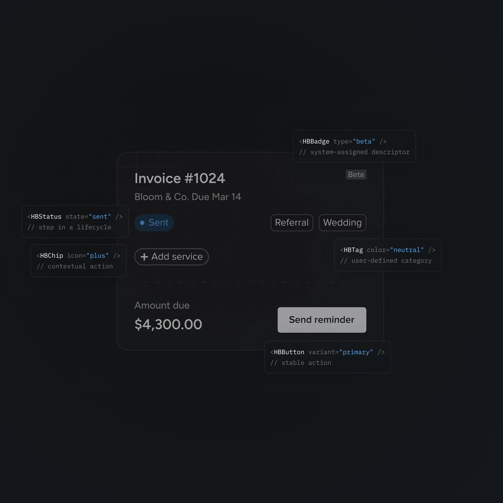
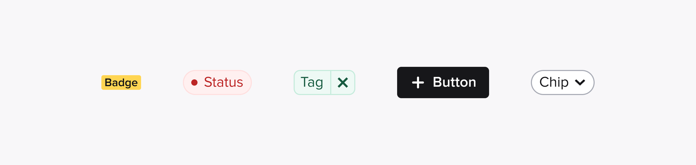
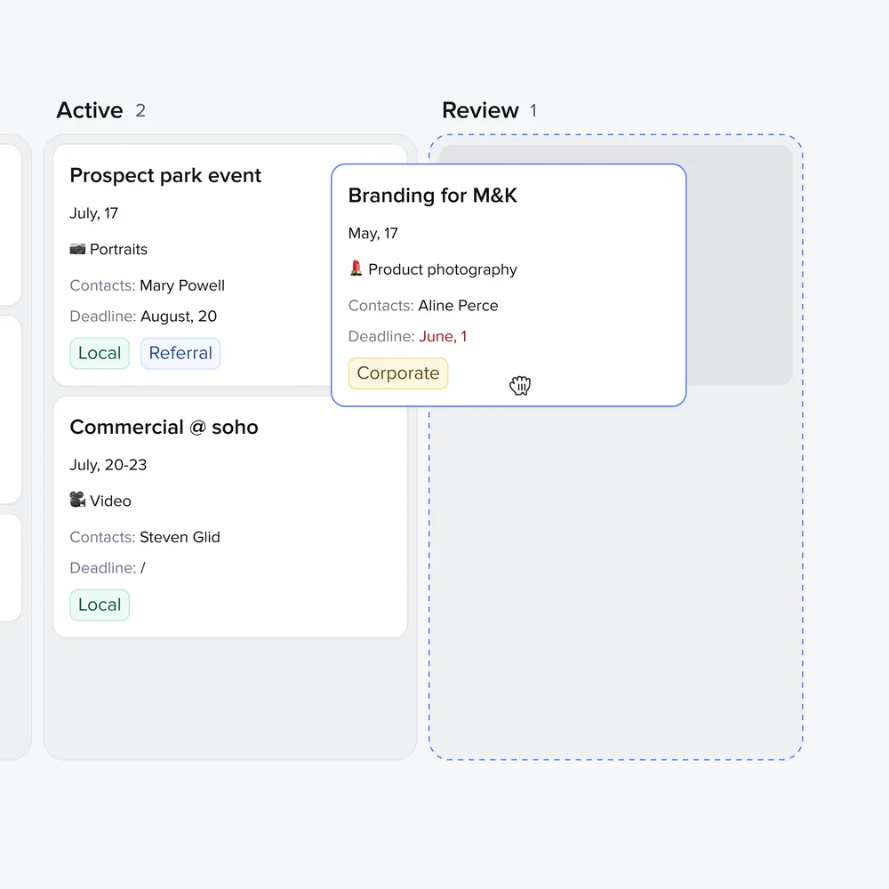
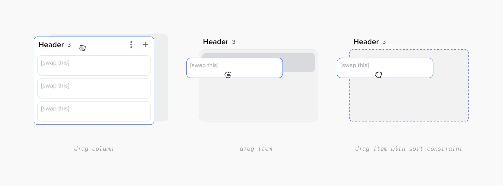
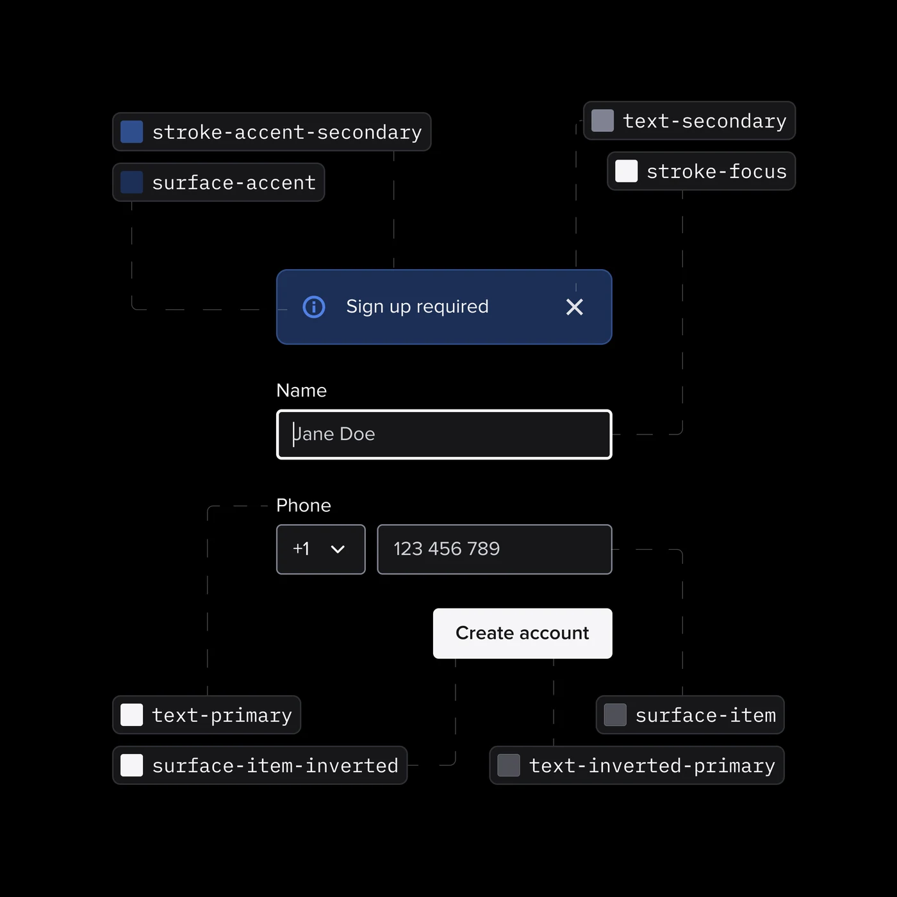
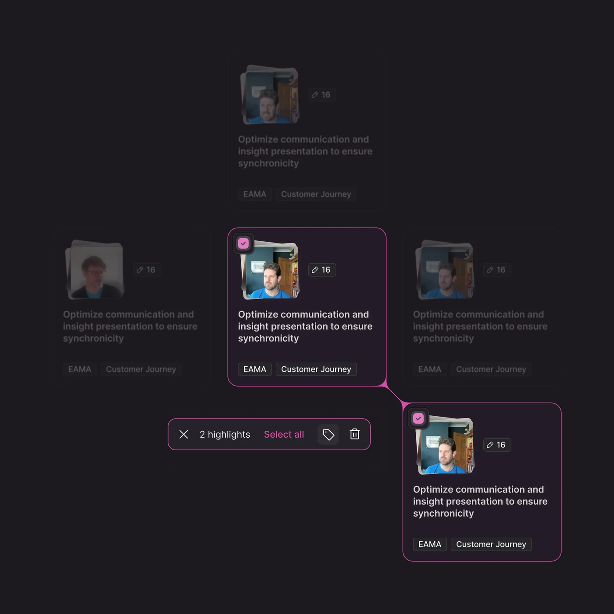

Component rules that people and AI follow, in 50+ shipped features
The problem
Vibe coding changed who builds at HoneyBook. PMs prototype, designers open PRs, and LLMs generate UI. That changes what a design system is for: HBUI now serves people and AI alike, and both need it to be unambiguous.
It wasn't. Across the library, components overlapped in look and purpose, with no written meaning behind them. Tags were the clearest example: they were used for categories, for filters and for statuses, and each of those behaves differently. The same-looking element did three jobs with three interactions. People used components interchangeably, and an LLM had no way to tell them apart, so it guessed, or reached for a public library instead.
Key decisions

1. Define components by meaning, not by look.
I mapped every overlapping component by purpose, usage and level of interaction, then gave each a distinct role and contract:
- A Badge is a system-assigned descriptor.
- A Status is a step in a lifecycle.
- A Tag is a user-defined category.
- A Chip is a contextual action.
- A Button is a stable action.
Then we aligned the visuals to match, so each one still feels related but now signals its purpose.
Tradeoff: many existing screens had to change to follow the new contracts. Tags became chips, badges or statuses, some badges became tags, and old "pills" became statuses or badges. Status got the most care, because in a CRM it carries the most weight.
2. One source of truth, not two.
People rely on visuals and AI needs structured text. Writing every guideline twice would double the upkeep and let the two versions drift apart. Instead we restructured the guidelines as data, with one shared format that produces a Storybook page for people and a rules file for agents.
Tradeoff: writing guidelines as structured data is slower than free-form docs. It pays off on every update after.
3. A shared, plain-language vocabulary.
Rule writing is a human, messy process, even when the output has to be structured. We set ground rules for the writing itself: one vocabulary across components, patterns and guidelines, and images that point at the exact rule they illustrate. That keeps the system readable for anyone, however close they work to it.
4. Accept that patterns don't all fit one shape.
Components have properties, and patterns have scenarios. They overlap enough to share a common format, but patterns differ heavily from each other. Forcing them into one template would have made the system brittle, so the format flexes where it has to.
Impact
- 50+ features and counting have shipped on the right components. It's now the way code ships at HoneyBook.
- Every designer opens PRs now, building on the same rules as engineers and agents.
- Every ship includes checks against the rules. They rarely need to step in, because the design is already right.
- Fewer fixes are needed, and reviews are easier because the rules are clear.
- Generated code builds on HBUI instead of public libraries.
What I learned
AI is here to stay, and so are systems. The work that made HBUI legible to agents (clear roles, plain language, one source of truth) is the same work that made it clearer for people. Systems are built around people, and human language outlasts any tool.

Three boards, one kanban system
The problem
The Pipeline is home base for HoneyBook members, but it was an outdated table posing as a pipeline. Projects, contacts and tasks all needed a board, and each was owned by a different team with its own timeline and opinions on how a kanban should work.
Without a shared model, every board would be built from scratch, and inconsistently. The challenge was finding enough common ground to build once, without flattening real differences between domains.
Key decisions
1. Columns are just a property.
Every domain was really visualizing a property value: a project's stage, a task's status, a lead's source. So I designed one system instead of three boards. Nearly any property can define the columns, and moving a card changes that value. Visual continuity keeps that clear while things move.
Tradeoff: a generic model needs more upfront design than one bespoke board. It's why any new board can now import it straight from the library.
2. Map card properties by behavior.
Cards hold both content and interactive parts. I mapped every card property by how it behaves, so interactive elements never clash with content, whichever domain fills the card.
3. Design every interaction state up front.
Drag, bulk select, sort constraints and columns that can't accept an item were all designed before build, not discovered during QA. Sorting was the hardest. Without a sort, a card can drop anywhere. With a sort on, the card lands in a column and the column places it for you. To keep that smooth and continuous, the drag had to account for the sort, so the card settles where it belongs instead of jumping.

4. Defaults first, customization second.
Flexibility meant three things: sensible defaults for fast shipping, defined pillars for cross-domain coherence, and room for domain-specific content without breaking the system. Any card can be customized, but the design works best with system presets.
Tradeoff: every team wanted its own actions in a more prominent spot, but that often clashed with behaviors every board shares, like selecting. We worked together on good in-betweens instead of one-off exceptions.
Impact
- The Pipeline was rebuilt on the system and shipped with no custom one-offs in the code.
- Members responded warmly.
- Any new board imports the same component from the library, so contacts, tasks and other domains can follow without new design or code.
What I learned
The best systems work often starts as product work. Finding the one idea that the domains shared (columns as a property) did more than any amount of visual alignment could have.


Three token layers that make dark mode a token swap
The problem
The foundations under a design system decide how far it can scale. At HoneyBook, they were outdated: some tokens, a lot of raw hex values, and many inconsistencies. Every theme change or contrast fix meant hunting through components, and dark mode would have meant designing much of the product twice.
The question was how to set up tokens that improve scale without making the system harder to understand or adopt.
Key decisions
1. Three layers, with strict rules about who uses what.
- Primitives hold raw values.
- Semantic tokens name those values by purpose, such as secondary text or an accent surface.
- Components only ever use semantic tokens. Never primitives, never raw values.
Tradeoff: the strict rule adds a step when someone needs a new color. That step is the point: it forces a conversation about purpose before a new value enters the system.
2. Name tokens by purpose, not appearance.
text-primary, surface-accent, stroke-focus say what a color is for, not what it looks like. That's what makes theming possible: the purpose stays the same in dark mode, and only the value changes. Every name follows one pattern: category (text, surface, stroke), then role or attribute (primary, accent, item), then state (hover, focus).
3. Put accessibility in the foundation.
Contrast is checked at the token level, not patched per component. Every text and surface pairing is checked, so every component built on them inherits accessible color.
4. Map before migrating.
I started by mapping the layers beneath the UI: where consistency matters most, where change is most likely, and where values were already drifting. Grays were the clearest case: about 20 different grays came down to a handful of semantic values.
Impact
- Every component is rewired to semantic tokens. Dark mode is now a token swap, same components with different values, and it's about to launch.
- About 20 grays now map to a handful of semantic values.
- Every color pairing is contrast-checked at the foundation.
- The same structure lets the system scale to new themes and to AI-generated code, because there's one place to change a decision.
What I learned
Foundations work is invisible, but it shapes everything that comes after. A strong token structure makes design decisions easier to change, scale and keep aligned across teams.

Onboarding that gets users to value sooner, part of 50%+ ARR growth
The problem
NEXT helps product teams turn customer research into what to build next. New users signed up, but many never reached the moment where the product proved its value: seeing insights from their own research. Without that moment, upgrading rarely made sense to them.
At the same time, NEXT shipped features every week, so the structure kept growing and the product got harder to navigate for someone new.
Key decisions
I tested three ideas in fast iterations:
1. Show the process the way teams work.
A vertical view of the research process (collect, highlight, cluster) mirrors how teams actually work. It became the side navigation, with results brought forward for impact-driven PMs. The vertical menu also made room for tailored data views, which turned out to be invaluable for customers.
Tradeoff: moving the navigation touched every part of the product, at a company releasing weekly. As a small team, we shipped it all at once and kept iterating.
2. Always invite users to add their own data.
Seeing the product is one thing. Seeing your own research in it is what proves the value. Every new user got a clear starting point that invited them to upload their own research.
3. Put the upgrade where the value is.
A visible usage meter (for example, 127 of 180 minutes used) sits next to an Upgrade button, right where users see the value. The incentive shows up at the moment it makes sense.
Impact
- Significantly more new users uploaded their own data early on.
- The upgrade prompt became a steady source of sales conversations.
- It was part of 50%+ ARR growth in the month after release.
- Customers said it was simply easier to set up, and that it matched how they think.
What I learned
This design grew out of small concepts made over a long time. When a vision is clear, ideas can come from anywhere, and the work is capturing them and bringing them together at the right moment.

Research synthesis in minutes instead of hours
NEXT turns large research datasets into patterns teams can act on: collect data, highlight what matters, and cluster it into insights. My goal was to let people focus on what their data says, not on organizing it.
Actions appear only when they're useful: selecting highlights reveals grouping actions right where people expect them. A live cluster preview lets people add insights without memorizing every pattern, and faces and images make text-heavy research easier to scan. Insights connect to business metrics in interactive charts, built around how customers already report.
Pattern finding became something people discover naturally, and teams could prioritize their biggest opportunities first.

One search for quick lookups and complex queries
Research bases hold huge amounts of data with countless properties. Search is a simple idea but a difficult reality: it had to handle complex queries while staying approachable.
I studied familiar patterns like Spotlight and ⌘K menus, then defined NEXT's own use cases with engineering. The search supports syntax for power users, like "creator:" and "date:", while chips show categories and values visually, so nobody has to learn the syntax.
One search now handles both quick lookups and complex queries. Nearly every decision had a real technical cost, so each one is backed by a clear UX rationale.